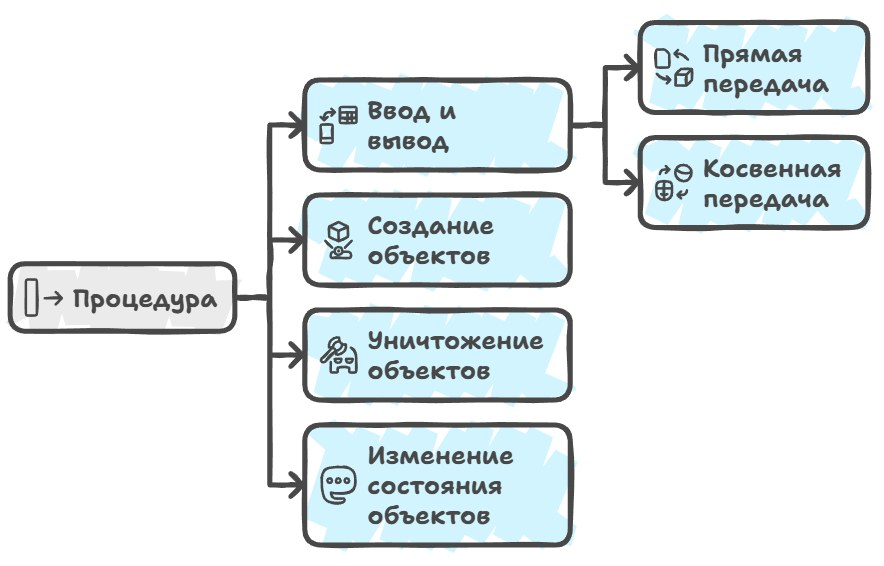
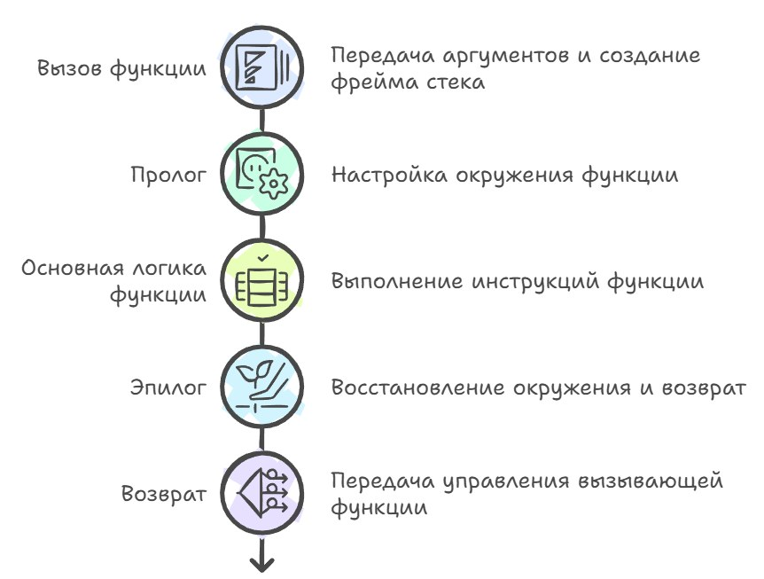
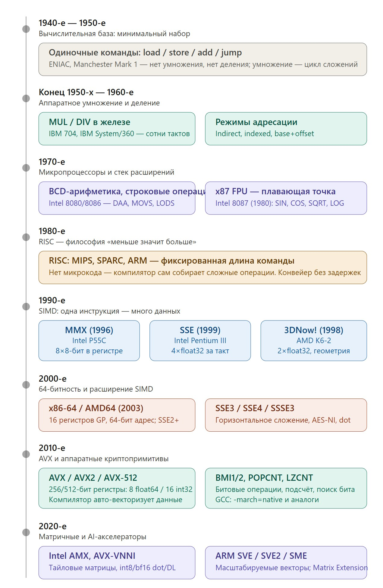
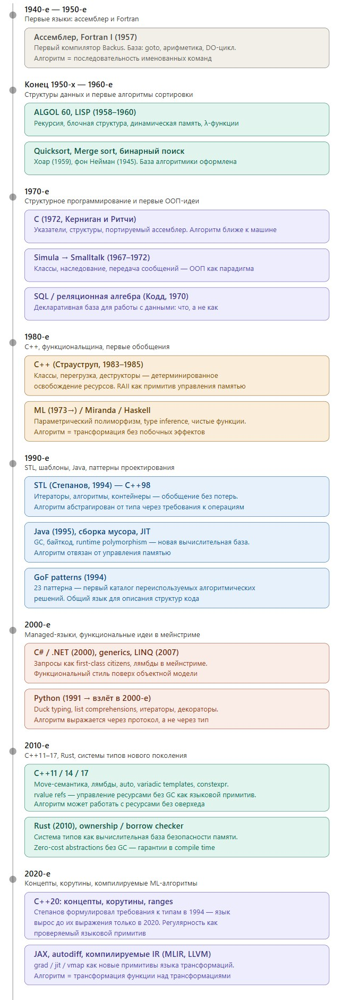
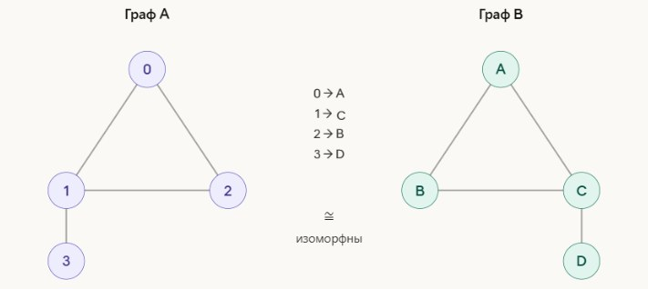

Questo non è un articolo autonomo, ma la continuazione della parte 1 sulla teoria degli oggetti in C++ — perché gli oggetti in C++ sono fatti così. Pubblico anche tutti i capitoli finiti su GitHub in inglese e in russo. Continuiamo a scavare nella teoria del C++…
L'identità di un oggetto merita un discorso a parte, perché nel mondo reale le entità concrete hanno un'identità, e Socrate resta Socrate indipendentemente dal fatto che si sia tinto i capelli, abbia cambiato indirizzo o sia morto, mentre uno stato resta lo stesso stato anche se cambia bandiera, costituzione o la dimensione della popolazione.
Per riflettere tutto ciò in un programma, gli oggetti che rappresentano entità concrete hanno bisogno di una propria definizione di identità, separata dallo stato corrente. Un modo comodo per introdurre tale identità è creare una qualche identity token, un valore univoco che esprime «chi è questo» piuttosto che «in quale stato si trova in questo momento». Un token del genere può essere, per esempio, l'indirizzo dell'oggetto in memoria, un indice in un array o il numero di matricola di un dipendente in un sistema HR — e verificando l'uguaglianza degli identity token stiamo di fatto verificando l'identità degli oggetti: lo stesso oggetto o oggetti diversi.
Nel corso della vita di un programma un oggetto concreto può cambiare i suoi identity token, perché può essere spostato in una diversa regione di memoria, trasferito da un contenitore a un altro o dotato di un nuovo identificatore, ma l'identità logica si conserva finché manteniamo una corrispondenza tra il token «vecchio» e quello «nuovo».
Infine, vale la pena tracciare una linea netta tra l'uguaglianza degli oggetti e la loro identità. Due oggetti dello stesso tipo sono uguali se i loro stati sono uguali come valori: due std::string che contengono entrambe "hello" sono uguali anche se si trovano in posti diversi in memoria e hanno buffer interni diversi; due std::vector<int> che contengono sequenze identiche sono uguali in quanto sequenze di valori.
In questo caso è naturale dire che un oggetto è una copia di un altro, e qualsiasi modifica apportata a uno non intacca la copia. Il controllo di uguaglianza qui si basa su un modello a valori, non sugli indirizzi, mentre l'identità risponde a una domanda diversa — «è proprio lo stesso oggetto, o solo un altro oggetto con lo stesso stato?».
Nei primi compilatori e runtime del C++ la questione dell'uguaglianza e dell'identità era strettamente legata al modo in cui erano implementati la copia e lo spostamento, e le vecchie implementazioni potevano inaspettatamente «condividere» i buffer interni tra oggetti — per esempio std::string tramite copy-on-write — e bisognava fare attenzione a cosa significasse esattamente «una copia»; ma con l'evolversi dello standard e delle sue implementazioni, compilatori e librerie sono diventati molto più rigorosi nel trattare l'uguaglianza per stato e l'identità per identity, il che ha reso più facile ragionare sulla correttezza.
// GCC prima del C++11 con le stringhe COW:
std::string s1 = "hello";
std::string s2 = s1; // Il buffer NON viene copiato
// s1 e s2 puntano a UN buffer in memoria
// Internamente il reference count = 2
// Alla modifica:
s2[0] = 'H'; // Solo ORA il buffer viene copiato (Copy-On-Write)E con l'arrivo delle nuove tecniche di ottimizzazione del codice, è emerso che un token del genere può addirittura non esistere affatto, e l'indirizzo smette di essere un marcatore affidabile di identità, perché un oggetto può non avere alcun indirizzo stabile per tutta la sua vita, esistendo ora in memoria, ora nei registri, ora come una costante incorporata nel codice. Inoltre, con la move semantics del C++11 è diventato ovvio che l'indirizzo di un oggetto può cambiare quando lo si sposta da un contenitore a un altro.
// Codice C++:
struct Point { int x, y; };
void foo() {
Point p;
p.x = 10;
p.y = 20;
use(p.x + p.y);
}
// Senza ottimizzazioni (l'oggetto vive in memoria):
; %p = alloca Point
; store 10, p.x
; store 20, p.y
; load p.x, load p.y
// Dopo le ottimizzazioni (l'oggetto è diventato valori nei registri):
; %x = 10
; %y = 20
; %sum = add %x, %y
; (non esiste affatto un oggetto Point in memoria)
// qui arrivano i problemi
Point p; ? nessun identity tokenL'esempio più semplice di perdita del token dell'indirizzo si ha con gli array: puoi memorizzare un puntatore a un elemento di uno std::vector e trattarlo come un identity token, ma qualsiasi operazione che scateni una riallocazione invalida tutti i puntatori, e sei costretto a usare indici o iteratori che restano stabili rispetto all'ordine degli elementi ma non alla loro posizione fisica — e questo è già un modello di identità del tutto diverso, in cui «chi è questo» è definito non da «dove si trova» ma da «che numero ha» o «come ci si arriva».
Nei moderni sistemi di gioco l'identity token diventa sempre più un valore introdotto esplicitamente, indipendente dall'indirizzo: nelle popolari architetture ECS ogni oggetto riceve alla creazione un identificatore numerico univoco, e questo ID resta invariato indipendentemente da come i componenti dell'oggetto si spostano in memoria; nei database le primary key svolgono lo stesso ruolo, permettendo di riferirsi a un record indipendentemente dalla sua posizione fisica su disco; e nei sistemi distribuiti si usano UUID o GUID per garantire l'univocità senza coordinamento centrale. Tutti questi approcci condividono un'unica idea: l'identity token deve essere un valore stabile che sopravvive a qualsiasi spostamento, copia e trasformazione dell'oggetto, e che può essere memorizzato, passato e confrontato in sicurezza senza timore che l'ottimizzatore del compilatore, il garbage collector o una riorganizzazione dei dati lo rendano d'improvviso non valido.
Ma per noi è utile tenere a mente un quadro semplificato: la memoria (indirizzi e parole), il valore (l'interpretazione di una sequenza di bit), l'oggetto (il posto in memoria) dove questo valore vive, e il tipo di dato come la nozione di come memorizziamo, leggiamo, modifichiamo e confrontiamo quei bit.
Le procedure
Quando passiamo dai valori e dagli oggetti al comportamento di un programma — e a ciò che effettivamente rende un programma un programma — entra in scena un'altra categoria fondamentale: le procedure. Nel C++ ordinario si tratta semplicemente di una funzione, ma in un senso più generale possiamo dire che una procedura è una qualche sequenza di regole che cambia lo stato degli oggetti con cui lavora, e talvolta crea anche nuovi oggetti o ne distrugge di vecchi.

Storicamente i compilatori partirono da una comprensione molto primitiva delle procedure: nei primi Fortran e nelle prime versioni del C una procedura era semplicemente un frammento di codice con un nome e un insieme fisso di argomenti, e tutta la «magia» stava nel generare correttamente il suo ingresso e la sua uscita (il prologo e l'epilogo), nel salvare i registri e nell'organizzare lo stack.
int sum(int a, int b) {
return a + b;
}
int main() {
return sum(2, 3);
}
// semplificato, tutto passa attraverso lo stack
push 3 ; argomento b
push 2 ; argomento a
call sum
sum:
push bp
mov bp, sp
mov ax, [bp+4] ; a
add ax, [bp+6] ; b
pop bp
ret
// caratteristiche
- tutti gli argomenti vivono in memoria
- accesso tramite bp/fp
- ogni chiamata è uno stack frame esplicito
- semplice, ma nel complesso lento e genera molti accessi in memoriaLo stack delle chiamate stesso è semplicemente una regione di memoria che cresce e si riduce man mano che il programma entra ed esce dalle funzioni, e ogni chiamata di funzione crea un nuovo frame sullo stack — uno stack frame o activation record — che contiene tutte le informazioni necessarie per eseguire quella particolare istanza della funzione: variabili locali, argomenti, l'indirizzo di ritorno, i valori dei registri salvati e, possibilmente, ulteriori dati di servizio come un puntatore al frame del chiamante o del padding per l'allineamento.
Quando il compilatore genera il codice per una chiamata di funzione, la prima cosa che deve decidere è come passare gli argomenti, ed è qui che entrano in gioco le calling convention, che stabiliscono se i primi argomenti vengono passati attraverso i registri del processore per velocità e i restanti collocati sullo stack, oppure se tutti gli argomenti vanno sullo stack — più lento ma più semplice da implementare e da debuggare — e storicamente architetture e compilatori diversi hanno scelto strategie diverse.
// semplificato, fastcall
mov ecx, 2 ; a
mov edx, 3 ; b
call sumreg
sumreg:
mov eax, ecx
add eax, edx
retIl prologo viene eseguito subito dopo l'ingresso nella funzione e prima che inizi la sua logica principale, e il suo compito è predisporre l'ambiente di lavoro: salvare i valori di quei registri che la funzione intende usare ma che per convenzione devono essere ripristinati prima del ritorno (i callee-saved register), allocare lo spazio per le variabili locali e impostare uno speciale registro che punterà a un punto fisso all'interno del frame e gli permetterà di indirizzare le variabili locali e gli argomenti a offset costanti indipendentemente da come lo stack pointer cambia durante l'esecuzione della funzione. Nel classico x86 il prologo consisteva nel salvare il vecchio valore del base pointer e impostare il nuovo puntatore alla cima corrente dello stack, e questa sequenza è diventata talmente standard che i processori hanno persino ottenuto un'istruzione dedicata che fa tutto in un colpo solo, anche se in pratica i compilatori la usano di rado.
Allocare la memoria per le variabili locali sullo stack nel prologo non è solo sottrarre un numero dallo stack pointer — è anche un problema di collocazione ottimale: il compilatore deve decidere in quale ordine disporre le variabili, come allinearle e se la stessa regione di memoria possa essere riutilizzata per variabili diverse che non vivono nello stesso momento, il che consente di risparmiare spazio nello stack frame.

I primi compilatori risolvevano tutto ciò in modo molto lineare: ogni variabile otteneva il proprio slot fisso, la dimensione del frame era la somma delle dimensioni di tutte le variabili locali più l'allineamento, e non c'era alcuna ottimizzazione; ma con la crescita della complessità dei programmi apparvero algoritmi come la colorazione dei grafi, che cominciarono a essere applicati anche alla collocazione delle variabili sullo stack, permettendo di sovrapporre le une alle altre variabili con tempi di vita non sovrapposti.
L'epilogo della funzione fa l'inverso, ripristinando lo stack pointer allo stato in cui si trovava prima della chiamata e ricaricando i valori salvati nei registri. Poi esegue l'istruzione di ritorno, che estrae l'indirizzo di ritorno dallo stack e restituisce il controllo al chiamante — e anche qui ci sono delle sottigliezze, perché calling convention diverse distribuiscono in modo diverso la responsabilità di ripulire gli argomenti dallo stack. Nella cdecl lo fa il chiamante dopo il ritorno, il che permette di supportare funzioni con un numero variabile di argomenti ma richiede di generare codice aggiuntivo, mentre nella stdcall è il chiamato a fare la pulizia prima del ritorno, il che riduce la dimensione del codice ma rende impossibile un certo tipo di chiamata di funzione; ed è proprio questa differenza che ha portato a problemi di compatibilità tra diverse versioni di librerie, quando codice compilato con una convention veniva chiamato da codice che ne aspettava un'altra, e lo stack si corrompeva, provocando crash molto tempo dopo la chiamata scorretta.
I compilatori moderni sono andati molto oltre il semplice modello «alloca spazio, chiama la funzione, libera lo spazio» verso ancora un altro sistema con una propria teoria e proprie ottimizzazioni.
int sum(int a, int b) {
return a + b;
}
int main() {
return sum(2, 3);
}
// semplificato, versione debug
mov edi, 2
mov esi, 3
call sumreg
// sumreg, debug
; a → edi, b → esi
add edi, esi
mov eax, edi
ret
// sumopt, release
mov eax, 5
ret
// caratteristiche
- i registri sono il percorso principale per passare i dati
- lo stack come ripiego e per gli oggetti grandi
- il compilatore può eliminare del tutto la chiamata
- oppure rimuovere il frame e inlineare l'esecuzione nel punto di chiamata
- oppure fare la chiamata e tenere tutto nei registri
// in conclusione
- una procedura ≠ necessariamente uno stack frame
- un argomento ≠ necessariamente un accesso in memoria
- una chiamata ≠ necessariamente un'istruzione callIl passaggio degli argomenti
Con l'evolversi dei linguaggi e dei compilatori, è diventato chiaro che la domanda chiave qui non è tanto la sintassi quanto esattamente come una procedura interagisce con gli oggetti: quali legge, quali modifica, quali vivono solo per la durata della chiamata e quali sopravvivono a molte chiamate e persino all'intero programma. Se proviamo a scomporre questa interazione in categorie chiare, possiamo individuare quattro gruppi di oggetti con cui praticamente qualsiasi procedura ha a che fare. Primo, è «in e out / in-out», cioè oggetti passati dentro e fuori dalla procedura in modo diretto o indiretto.
Direttamente è quando scrivi int f(int x) e il compilatore passa il valore x tramite i registri o lo stack e poi restituisce il risultato, diciamo, anch'esso in un registro; indirettamente è quando passi un puntatore o una riferimento, come void increment(int* p), e la procedura lavora con l'oggetto non come una copia del valore ma come l'originale in memoria.
Secondo, c'è lo stato locale: oggetti temporanei creati all'inizio della chiamata di una procedura, che vivono sullo stack o nei registri, si adattano alle esigenze dell'algoritmo e vengono distrutti quando la procedura finisce. Se in una funzione void foo() dichiari int tmp = 0; std::vector<int> v(10);, allora sia tmp sia v fanno parte dello stato locale di questa procedura: le servono per lavorare, ma nessuno all'esterno ne è a conoscenza né dovrebbe esserlo.
E lo stato globale: oggetti accessibili non solo a questa procedura ma anche ad altre, e attraverso molte chiamate — sono variabili globali, campi statici o oggetti in memoria dinamica referenziati da diverse parti del programma.
E infine, c'è lo stato proprio della procedura, cioè oggetti accessibili solo a essa (ed eventualmente a funzioni strettamente correlate) ma preservati tra una chiamata e l'altra. L'esempio più semplice è una variabile statica dentro una funzione: puoi scrivere
void counter() {
static int n = 0;
++n;
std::cout << n;
}e allora n vive tanto quanto vive il programma, ma solo counter può usarla; per tutti gli altri è come se non esistesse — e questo mostra il tipico pattern dello stato «nascosto» di una procedura, apparso già nel vecchio C molto prima delle classi.
In, Out, InOut
Per parlare più precisamente del comportamento di una procedura, dobbiamo introdurre un'ulteriore distinzione: quali oggetti contano come suoi input, quali come output e quali come entrambi. Se una procedura si limita a leggere il valore di un oggetto, senza mai modificarlo, allora per la procedura quell'oggetto è un input puro; se invece la procedura crea un oggetto, vi scrive dei dati o lo distrugge senza guardarne il contenuto precedente, allora tale oggetto funge da output e il suo stato iniziale non conta, conta solo quello nuovo.
/* ═══════════════════════════════════════════════════
INPUT PURO / la funzione si limita a leggere l'oggetto
═══════════════════════════════════════════════════ */
// len non modifica l'array, arr è un input puro.
// Il compilatore può estrarre la chiamata dal loop (CSE/hoisting),
// mettere in cache il risultato, riordinarla rispetto ad altre
// chiamate che a loro volta si limitano a leggere.
size_t len(const int *arr, size_t n) {
size_t count = 0;
for (size_t i = 0; i < n; i++)
if (arr[i] != 0) count++;
return count;
}
void pure_in(void) {
int data[] = {1, 0, 3, 0, 5};
// Il compilatore vede che data non cambia tra le chiamate →
// può calcolare len() una volta sola e riutilizzarlo.
printf("len=%zu, len=%zu\n", len(data, 5), len(data, 5));
}/* ═══════════════════════════════════════════════════
OUTPUT PURO / la funzione crea o riempie completamente l'oggetto,
il contenuto precedente non viene letto
═══════════════════════════════════════════════════ */
// Lo stato iniziale di dst non conta affatto — è un output puro.
// Il compilatore può eliminare la scrittura precedente in dst (DCE):
// se fill() viene subito dopo, i vecchi dati vengono comunque sovrascritti.
void fill(int *dst, size_t n, int value) {
for (size_t i = 0; i < n; i++)
dst[i] = value; // solo una scrittura, nessuna lettura
}
void pure_out(void) {
int buf[8];
buf[0] = 42; // ← il compilatore può rimuovere questa scrittura (DCE):
// fill() qui sotto sovrascrive l'intero array
fill(buf, 8, 0);
printf("buf[0]=%d\n", buf[0]);
}Il caso più interessante è quando un oggetto viene sia letto sia modificato: per esempio, un contatore passato per riferimento che la funzione incrementa, oppure un elemento di un array che viene prima verificato rispetto a una condizione e poi aggiornato. Tali oggetti fungono da in/out della procedura, e sono molto spesso la fonte di effetti complessi e di bug se il programmatore non si rende pienamente conto di chi nel programma ha il diritto di cambiarne lo stato.
// --- Un contatore passato per riferimento ---
// counter viene prima letto (per incrementarlo), poi scritto.
// Due chiamate a increment() NON sono equivalenti a una increment_by_2(),
// se tra di esse c'è un altro thread o un segnale che legge counter.
void increment(int *counter) {
(*counter)++; // lettura + scrittura: un tipico in/out
}
// --- Un elemento di un array: verifica + aggiornamento ---
// La funzione guarda prima il vecchio valore (input),
// poi scrive quello nuovo (output). L'ordine delle operazioni è critico.
void cap_and_mark(int *value, int limit) {
if (*value > limit) // lettura ← input
*value = limit; // scrittura ← output
}
// --- Il classico accumulate: in/out nella sua forma più pura ---
// sum viene letta a ogni iterazione e subito scritta.
// Il compilatore NON PUÒ scambiare l'ordine delle iterazioni né
// parallelizzare senza un suggerimento esplicito (OpenMP reduction ecc.),
// perché ogni iterazione dipende dal risultato della precedente.
void accumulate(const int *arr, size_t n, int *sum) {
for (size_t i = 0; i < n; i++)
*sum += arr[i]; // *sum: lettura → modifica → scrittura
}Nei primi compilatori l'analisi di queste categorie era quasi interamente sulla coscienza del programmatore e il compilatore si limitava a prendere il codice così com'era, ma i moderni ottimizzatori dei compilatori analizzano attivamente quali variabili vengono solo lette, quali vengono scritte e dove sono possibili side effect, e su questa base decidono quali chiamate possono essere modificate (reordering, cse, dce), quali trasformazioni sono ammesse e quali violerebbero la semantica attesa.
// restrict dice al compilatore: i puntatori dst e src non si sovrappongono.
// Senza di esso il compilatore deve assumere che dst e src possano
// puntare alla stessa regione di memoria (aliasing) → la vettorizzazione è vietata.
// Con restrict — può essere srotolato in istruzioni SIMD.
void add_arrays(int * restrict dst,
const int * restrict src,
size_t n)
{
for (size_t i = 0; i < n; i++)
dst[i] += src[i]; // dst: in/out; src: input puro
}
// __attribute__((pure)) — un suggerimento esplicito di GCC:
// la funzione non ha side effect e dipende solo dai suoi argomenti.
// Il compilatore può eliminare le chiamate ripetute (CSE) e
// riordinare la chiamata rispetto al codice che non tocca la memoria.
__attribute__((pure))
int dot_product(const int *a, const int *b, size_t n) {
int result = 0;
for (size_t i = 0; i < n; i++)
result += a[i] * b[i];
return result;
}La base computazionale
Passando dalle procedure all'idea di una base computazionale, devi capire quali operazioni il tuo tipo supporta in generale. Per qualsiasi value type puoi definire un qualche insieme minimo di procedure a partire dal quale, in linea di principio, possono essere costruite tutte le altre operazioni su di esso; tale insieme si chiama base computazionale del tipo.
Per esempio, per gli interi senza segno a k bit puoi prendere le operazioni «ottieni zero», «verifica l'uguaglianza» e «vai al valore successivo», e teoricamente da esse puoi implementare l'addizione, la moltiplicazione e il confronto, semplicemente come sequenze molto lunghe di chiamate a «next» e di verifiche.
Ma qui entra in gioco la nozione di efficienza: una base è considerata efficiente se qualsiasi procedura costruita su di essa può essere implementata non peggio che su qualunque altra base ragionevole. Nell'esempio (qui sotto) con l'operazione «next» va tutto male: sommare due numeri a k bit incrementando ripetutamente uno di essi richiede nell'ordine di 2^k passi nel caso peggiore, cioè è deliberatamente lento, mentre implementare l'addizione a livello di istruzioni macchina viene eseguito in un numero fisso di cicli indipendente dai valori degli argomenti.
Storicamente, se guardi all'evoluzione delle architetture dei processori e dei compilatori, puoi vedere come l'insieme delle operazioni di base sia stato gradualmente ampliato proprio per amore dell'efficienza: dalle prime macchine con un insieme di istruzioni molto limitato, dove le operazioni complesse dovevano essere emulate con lunghe sequenze di passi elementari, fino alle architetture moderne con un ricco sistema di comandi aritmetici e logici, per le quali i compilatori possono generare codice specializzato e versioni vettorizzate degli algoritmi.

Una breve digressione storica su come il codice si è infiltrato nel silicio
Anni '40 + '50: una base computazionale minima
ENIAC (1945) non aveva affatto un programma memorizzato; le «istruzioni» venivano impostate con pannelli a spinotti. Le uniche operazioni: addizione e sottrazione su cifre decimali accumulate in contatori ad anello.
Manchester Mark 1 (1948) ed EDSAC (1949) furono le prime macchine a programma memorizzato. Insieme di istruzioni: load/store, addizione, shift, salto condizionato. La moltiplicazione era assente come operazione hardware e il programmatore scriveva una subroutine di loop di addizioni.
IBM 701 (1952) il primo computer scientifico commerciale di IBM. Comparve la moltiplicazione ma richiedeva ~40 cicli macchina, e la divisione circa 80. Contro l'addizione (1 ciclo) questa era già una notevole «ottimizzazione della base».
La divisione era implementata tramite sottrazione ripetuta: il processore in loop sottraeva il divisore da un resto parziale e contava le iterazioni.
Fine anni '50 + '60: moltiplicazione hardware, divisione, modalità di indirizzamento
IBM 704 (1954) il primo computer di massa con floating point hardware e moltiplicazione hardware in una singola istruzione. I registri indice permisero di indirizzare gli array con un loop invece di sostituire manualmente l'indirizzo.
IBM System/360 (1964) l'unificazione di tutti i sistemi e un'unica ISA per macchine dal desktop al mainframe. Oltre 100 opcode; comparvero le modalità
base + displacement,register indirectPDP-8 (1965) 8 istruzioni nell'ISA, ma potenti modalità di indirizzamento compensavano la scarsità e mostravano che «una base piccola + modalità intelligenti» dà una flessibilità non inferiore a «una base grande».
CDC 6600 (1964) il primo supercomputer con una pipeline e diverse unità funzionali in parallelo. Il suo compilatore Fortran faceva già lo scheduling delle istruzioni perché la pipeline non si bloccasse.
Anni '70: microprocessori, x86, coprocessori
Intel 4004 (1971) 4 bit, 46 istruzioni, nessuna moltiplicazione. Una base minima in un chip di silicio.
Intel 8080 (1974) 8 bit, comparvero istruzioni per l'aritmetica BCD (
DAA,DAS) come sommare cifre decimali in un registro binario. Un esempio di ampliamento della base per uno specifico dominio applicativo (contabilità, registratori di cassa).Intel 8086 (1978) 16 bit, moltiplicazione a 16 bit
MUL/IMULe divisioneDIV. Aggiunse le operazioniMOVS,LODS,STOS— di fatto un loop hardware di copia della memoria, ciò che prima avrebbe richiesto un loop assembly esplicito.Zilog Z80 (1976) aggiunse
LDIR(block move) eDJNZ(decrementa e salta se non zero) — un'implementazione hardware del pattern «loop contato»; un altro esempio di come un pattern software frequente «affonda» nell'hardware.Intel 8087 (1980, formalmente già a cavallo con gli anni '80) aggiunse un coprocessore con registri stack a 80 bit e le istruzioni
FSIN,FCOS,FSQRT,FYL2X. La trigonometria, che prima richiedeva centinaia di righe di codice di libreria, divenne un singolo comando nel silicio. Il compilatore Fortran imparò subito a emettereFSINinvece di chiamaresin()da libc.
Anni '80: RISC e la filosofia «il compilatore è più intelligente del microcodice»
Berkeley RISC (1980) e Stanford MIPS (1981) progetti accademici che mostrarono che semplici istruzioni a lunghezza fissa permettono una pipeline lunga senza stalli, mentre le operazioni complesse è meglio implementarle nel compilatore che nel microcodice.
SPARC (1987, Sun) la prima grande architettura RISC commerciale. Il compilatore cc di Sun faceva l'allocazione dei registri attraverso le chiamate di funzione senza scrivere in memoria. Il processore fu progettato appositamente per il compilatore di Sun.
MIPS R2000 (1985) aggiunse un'unità
DIVseparata che lavorava in modo asincrono rispetto alla pipeline.ARM (1985, Acorn) un'ISA RISC a 3 indirizzi in cui il compilatore poteva trasformare brevi if-branch in codice lineare senza salti — il nonno dell'esecuzione speculativa e un'ottimizzazione cruciale per i piccoli branch predictor.
Intel 80386 (1985) 32 bit,
PUSHA/POPA,ENTER/LEAVEper i prologhi di funzione in una singola istruzione.
Anni '90: SIMD e ampliamento della base «in larghezza»
Intel MMX (1996, Pentium MMX) 57 nuove istruzioni, ora otto registri a 64 bit
mm0–mm7e unaPADDBsommava 8 coppie di byte in una volta. Codec video, audio, grafica 2D adottarono subito le nuove capacità e ciò accelerò il codice di 4–8× se preparato correttamente.AMD 3DNow! (1998, K6-2) 21 istruzioni per 2×float32. Puntato sulla geometria dei giochi 3D:
PFMUL,PFADD,PFRCPIT1(approssimazione della radice reciproca). Adattamento di un'estensione di nicchia della base della CPU a un mercato specifico.Intel SSE (1999, Pentium III) 70 istruzioni, otto nuovi registri a 128 bit
xmm0–xmm7. GCC ottenne il flag-mssee iniziò a vettorizzare automaticamente i loop semplici.SSE2 (2001, Pentium 4) aggiunse SIMD in floating point a doppia precisione e su interi nei registri xmm. Ora i compilatori passano gradualmente a SSE2 per il floating point scalare.
x86-64 / AMD64 (2003, AMD Opteron) tecnicamente gli anni 2000, ma con radici negli anni '90 (il progetto iniziò intorno al 1999). Registri estesi a 64 bit, aggiunti
r8–r15. SSE2 divenne una parte obbligatoria della base computazionale.
Anni 2000: 64 bit ovunque, crittografia e l'espansione del SIMD
SSE3 (2004, Prescott) aggiunse l'addizione orizzontale
HADDPS(somma le lane vicine all'interno di un registro), necessaria per l'aritmetica complessa e le funzioni di convoluzione; sotto la pressione del mercato il codice si spostò di nuovo nel silicio.SSSE3 (2007, Core 2)
PSHUFBe la permutazione dei byte tramite una maschera. Una delle primitive più potenti: permette di implementare lookup table e manipolazioni di bit senza branch; il compilatore di Intel lo usa per le ottimizzazioni delle LUT.SSE4.1 / 4.2 (2007–2008)
PMULDQ(moltiplicazione 32f×32f→64f),PCMPESTRM(ricerca di una sottostringa in una stringa in una singola istruzione),CRC32; gli algoritmi sulle stringhe e le funzioni hash ottennero supporto hardware nel silicioVT-x / AMD-V (2005–2006) virtualizzazione: le nuove istruzioni
VMXON,VMLAUNCH,VMEXIT. La base computazionale si espande non solo per il calcolo ma per la gestione privilegiata.
Anni 2010: AVX, algebra dei bit, memoria transazionale
AVX (2011, Sandy Bridge) registri
ymma 256 bit, 8 float32 o 4 float64 per ciclo. Rimosse le operazioni distruttive; i compilatori impararono a distribuire i sottotipi su tutti i registri.AVX2 (2013, Haswell) SIMD su interi a 256 bit, GCC con
-march=haswelliniziò a vettorizzare automaticamente molti più pattern.BMI1/BMI2 (2013) POPCNT ora può contare il numero di bit impostati. L'algoritmo di Hamming di ~15 istruzioni si trasforma in 1 operazione.
AVX-512 (2017, Skylake-X / Knight's Landing) registri
zmma 512 bit (16 float32)TSX / RTM (2013) memoria transazionale:
XBEGIN/XEND/XABORT. Un tentativo di far affondare i pattern lock-free nella base computazionale, ma disabilitato a causa di vulnerabilità.
Anni 2020: matrici, vettori scalabili, primitive per l'AI
AVX-VNNI (2021, Alder Lake) —
VPDPBUSDe varianti: dot-product int8/int16 con accumulo int32. Una chiamata sostituisce un loop interno di convoluzione, puntato sull'inferenza di reti neurali direttamente sulla CPU senza una GPU.Intel AMX (2023, Sapphire Rapids) tile register
tmm0–tmm7fino a 1 KB ciascuno;TDPBSSDcalcola un intero blocco di moltiplicazione di matrici in una singola istruzione, il che ha permesso di espandere la base computazionale da «vettoriale» a «matriciale».ARM SVE (2016, implementata in Fujitsu A64FX 2019, Apple M4 2024) la lunghezza del vettore non è fissata nella base computazionale, e un unico binario può girare correttamente a 128, 256, 512 bit e oltre. Il compilatore genera il codice una volta sola, e l'hardware si adatta alla larghezza dei dati.
Potresti, certo, dire che anche sottrarre due numeri arbitrari è eccessivo e può essere implementato tramite l'addizione con negazione, e la negazione tramite la sottrazione da zero, ma se provi a scrivere codice reale con le sole operazioni «+», «0» e «next», scoprirai che molte definizioni diventano ingombranti e illeggibili. Perciò, quando progettiamo una base «espressiva», aggiungiamo operazioni logicamente derivabili da altre, ma la cui utilità pratica derivante dall'essere esplicitamente presenti supera di gran lunga il costo dell'ingrandire la base.
// ============================================
// BASE MINIMA (teoricamente sufficiente)
// ============================================
namespace MinimalBase {
using uint = unsigned int;
// Tre primitive:
uint zero() { return 0; }
bool equal(uint a, uint b) { return a == b; }
uint next(uint a) { return a + 1; } // increment
// Tutto il resto si costruisce da queste tre operazioni:
// Addizione tramite increment ripetuto - O(b) operazioni!
uint add(uint a, uint b) {
uint result = a;
for (uint i = zero(); !equal(i, b); i = next(i)) {
result = next(result);
}
return result;
}
// Moltiplicazione tramite addizione ripetuta - O(a*b) operazioni!
uint multiply(uint a, uint b) {
uint result = zero();
for (uint i = zero(); !equal(i, a); i = next(i)) {
result = add(result, b);
}
return result;
}
// Confronto tramite sottrazione (tramite decrement ripetuto)
// O(min(a,b))
bool less(uint a, uint b) {
while (!equal(a, zero()) && !equal(b, zero())) {
a = a - 1; // qui ci servirebbe prev(), ma non è ancora nella base
b = b - 1;
}
return !equal(b, zero());
}
}Così è andata anche nello standard C++: formalmente il linguaggio avrebbe potuto essere reso molto minimalista come il suo genitore, ma in pratica la maggior parte di noi ha bisogno di operatori come -, *, /, delle verifiche <, > e delle funzioni standard sui numeri per esprimere i propri pensieri in modo chiaro e conciso, mentre un insieme così esteso permette al compilatore di tradurli meglio nelle corrispondenti istruzioni macchina.
Compilatori e librerie hanno gradualmente arricchito la base delle operazioni disponibili: le prime versioni delle librerie standard avevano meno algoritmi e meno operazioni «integrate» sui tipi, e i programmatori dovevano implementare da soli ciò che oggi si dà per scontato, avendo a disposizione tutto il necessario: dalle funzioni numeriche elementari a complessi algoritmi di ordinamento e ricerca.
I compilatori moderni vivono già in un mondo in cui la base computazionale per i tipi fondamentali è abbastanza ricca e ben ottimizzata, e il loro compito principale ora è usare questa base nel modo più efficiente possibile senza infrangere la semantica del linguaggio. Quando scrivi a + b per gli interi, il compilatore sa esattamente quale istruzione macchina usare, come tenere conto dell'overflow, quali flag verranno impostati nel processore, e su questa base può costruire sequenze di comandi ottimali. Ora, se sovrapponi lo sviluppo dell'hardware alle capacità dei linguaggi, ottieni qualcosa del genere:

anni '50: ENIAC → aritmetica (l'addizione come operazione di base)
anni '70: C → memoria e puntatori (aritmetica degli indirizzi)
anni '90: STL → iteratori e algoritmi astratti (operazioni invece di tipi)
anni 2000: SIMD → vettori (un'operazione su molti dati)
2010+: AMX / JAX → matrici e grafi di calcolo (operazioni a blocchi e dichiarative)Se invece crei un tuo tipo, diciamo BigInt o Rational, e definisci per esso un insieme minimo di operazioni tecnicamente completo ma poco espressivo o efficiente, allora tutte le funzioni che scrivi su questa base ne erediteranno anche i difetti: l'addizione implementata come increment ripetuto resterà esponenziale, per quanto tu la ottimizzi. Perciò, quando progetti i tuoi tipi in C++, ripercorri di fatto il cammino degli architetti delle macchine e degli autori dei compilatori: scegli quali operazioni rendere di base perché esprimere gli algoritmi sia comodo e il compilatore possa produrre codice efficiente — ed è proprio qui che le idee dei tipi regolari e di una scelta accurata della base computazionale diventano non teoria ma una guida pratica alla progettazione di astrazioni buone, prevedibili e veloci.
La regolarità
Il C++ moderno non esisterebbe senza la regolarità, che a prima vista sembra ridondante. Ma siamo abituati a scrivere codice basandoci su nozioni generali e a fare affidamento sul fatto che confronto, copia e assegnamento «in qualche modo funzionino a livello di linguaggio e compilatore». Dietro la regolarità si cela un'idea che permette al compilatore di ottimizzare il codice in sicurezza e a noi di ragionare su di esso in termini matematici, e questa idea affonda le sue radici nel lavoro fondamentale di Alexander Stepanov dell'inizio degli anni '90.
/* ═══════════════════════════════════════════════════════════════
IrregularMatrix un tipo IRREGOLARE per confronto.
Viola l'assioma dell'uguaglianza: una copia non è uguale all'originale
(identity al posto dell'uguaglianza per valore).
═══════════════════════════════════════════════════════════════ */
class IrregularMatrix {
int* data_;
int size_;
public:
explicit IrregularMatrix(int n)
: size_(n), data_(new int[n]{}) {}
// Il costruttore di copia copia il PUNTATORE, non i dati.
// Dopo di ciò two.data_ == one.data_ modificare one modifica two.
// Questo infrange la regolarità: la copia dipende dall'originale.
IrregularMatrix(const IrregularMatrix& o)
: size_(o.size_), data_(o.data_) {} // <- bug deliberato
// operator== confronta gli INDIRIZZI, dati identici non sono considerati uguali.
// La regolarità è infranta e due oggetti con gli stessi dati != tra loro.
bool operator==(const IrregularMatrix& o) const {
return data_ == o.data_; // <- bug deliberato
}
};Un tipo regolare nel senso moderno si comporta come le primitive quali int o double e supporta correttamente uguaglianza, copia, assegnamento e un costruttore di default in modo tale che valori uguali restino uguali dopo qualsiasi operazione, e le copie restino completamente indipendenti dall'originale, e questa prevedibilità permette al compilatore di sostituire le espressioni con altre semanticamente uguali senza perdere la correttezza del programma.
Le funzioni regolari, a loro volta, restituiscono risultati uguali quando applicate ad argomenti uguali, e questa proprietà, chiamata regolarità, è alla base di tutti gli algoritmi della libreria standard — dall'ordinamento e dalla ricerca fino alle trasformazioni di sequenze. L'intera STL è stata costruita sull'assunzione che i tipi nei contenitori e negli algoritmi si comportino come regolari: l'uguaglianza è riflessiva, simmetrica e transitiva, la copia crea una copia indipendente e l'assegnamento non cambia l'originale — ed è proprio questo che ha reso possibile creare una libreria in cui lo stesso algoritmo std::sort funziona correttamente con int, con std::string e con i nostri tipi utente, se sono stati progettati correttamente.
// Una funzione template lavora con QUALSIASI tipo regolare.
// Stepanov la chiamava "algoritmi astratti dal tipo".
// std::sort, std::unique, std::min_element sono tutti uguali.
template <typename T>
T midpoint(T a, T b) {
// Funziona correttamente solo se T è regolare:
// ci serve che (a + b) / 2 sia uguale a ciò che ci aspettiamo.
return (a + b) / T(2);
}Quando lavoriamo con tipi built-in come int, double o bool, di solito consideriamo uguaglianza, copia e assegnamento a tempo costante, perché si riducono a una o due istruzioni macchina di confronto o di spostamento tra registri, ma non appena passiamo a oggetti compositi il quadro si complica. Ci aspettiamo inoltre che un controllo di uguaglianza richieda un tempo proporzionale alla quantità totale di dati, compresi i campi locali; tuttavia, in pratica questa complessità lineare non è sempre garantita, e i compilatori usano trucchi per accelerare tali operazioni.
/* ═══════════════════════════════════════════════════════════════
Un tipo in cui == rappresentativo == comportamentale
Tipi triviali (POD) con una rappresentazione canonica
fissa e proprio per essi il compilatore è autorizzato
a usare memcpy/memcmp e a generare un confronto SIMD.
═══════════════════════════════════════════════════════════════ */
struct Vec3 {
float x, y, z;
// Ci affidiamo all'uguaglianza bit a bit: per Vec3 senza NaN è corretto.
// Il compilatore può srotolare in tre FCMPE o un VCMP (NEON/SSE).
bool operator==(const Vec3& o) const = default; // bit a bit
// La copia tramite memcpy garantisce la regolarità,
// che per un tipo progettato correttamente comporta l'identità comportamentale.
Vec3(const Vec3& o) {
std::memcpy(this, &o, sizeof(*this));
}
Vec3(float x, float y, float z) : x(x), y(y), z(z) {}
};Se prendiamo un multiset (una collezione non ordinata di elementi con possibili ripetizioni, per esempio uno std::vector con duplicati), allora tale tipo non è più regolare, ma ci sono delle sfumature. Inserire un nuovo elemento è a tempo costante, perché aggiungiamo l'elemento alla fine, ma per verificare l'uguaglianza di due multiset del genere devi o ordinarli entrambi e confrontarli lessicograficamente, il che richiede O(n log n), oppure per ogni elemento del primo insieme verificarne la presenza nel secondo tenendo conto della molteplicità, il che richiede O(n²) in un'implementazione ingenua.
Lo std::unordered_multiset standard gestisce meglio la cosa: il suo operator== funziona in media in O(n) ma degrada a O(n²) con molte collisioni della funzione hash, e lo standard lo consente esplicitamente. Se cominci a usare tali multiset come elementi di un altro contenitore in cui servono controlli di uguaglianza per la ricerca o l'hashing, le prestazioni calano bruscamente rispetto ai tipi il cui operator== funziona in O(1).
In casi estremi l'uguaglianza può rivelarsi un problema NP-hard, per esempio se devi verificare l'isomorfismo di grafi. Il grafo A e il grafo B sembrano diversi — nomi dei vertici diversi, disposizione diversa. Ma se rinomini 0→A, 1→B, 2→C, 3→D, tutti gli archi corrispondono uno a uno. Quindi i grafi sono isomorfi: la stessa struttura, solo disegnata in modo diverso.
Per verificare l'isomorfismo nel caso generale, devi trovare la corrispondenza giusta tra tutte le possibili permutazioni dei vertici. Per un grafo di n vertici sono n! varianti, e a n=20 sono già una quantità astronomica di operazioni. Un algoritmo veloce (entro tempi ragionevoli) che funzioni per grafi arbitrari finora non è stato trovato, ma non è nemmeno stato dimostrato che non ne esista uno.

In situazioni del genere il programmatore è costretto o a rinunciare alla piena uguaglianza semantica, o ad accontentarsi dell'uguaglianza rappresentativa e a confrontare direttamente i bit, il che è veloce ma può dare falsi positivi per valori che sono semanticamente uguali ma codificati in modo diverso.
/* ═══════════════════════════════════════════════════════════════
Un tipico compromesso nel codice reale:
memorizzare una forma canonica per supportare la regolarità
Pattern: normalizzare alla creazione → memcmp è corretto.
È esattamente così che sono costruiti std::set, std::map,
═══════════════════════════════════════════════════════════════ */
struct CanonicalGraph {
int V;
std::set<std::pair<int,int>> edges; // memorizza {min,max} — la forma canonica
void add_edge(int u, int v) {
if (u > v) std::swap(u, v); // normalizzazione all'inserimento
edges.insert({u, v});
}
// Ora grafi isomorfi con la stessa numerazione sono uguali;
// così pure quelli codificati in modo identico.
bool operator==(const CanonicalGraph&) const = default;
};È esattamente per questo che, quando l'uguaglianza comportamentale è troppo costosa o impossibile da implementare, si deve ripiegare su quella rappresentativa: due valori sono uguali se la loro immagine di bit è identica, e per gli oggetti compositi questo è spesso implementato tramite confronto ricorsivo dei campi o tramite memcmp sui byte grezzi.
L'uguaglianza rappresentativa comporta sempre l'uguaglianza comportamentale, perché se i bit coincidono allora coincide l'interpretazione, mentre il contrario non è sempre vero; ma in pratica questo è molto comodo per i costruttori di copia e di assegnamento: se li implementi tramite copia byte per byte, garantisci che la copia sarà uguale all'originale per rappresentazione, e se il tipo è progettato correttamente, anche per comportamento.
Analogamente, quando la piena uguaglianza semantica è troppo costosa, puoi usare un ordine strutturale: lessicografico per le sequenze o per i primi campi che differiscono per le strutture, il che ti permette di ordinare e cercare in modo efficiente anche quando il vero ordine semantico non è disponibile. Tuttavia, non tutti gli oggetti ammettono la copia o l'uguaglianza in generale: se un oggetto possiede una risorsa unica come un file aperto, una connessione di rete o un buffer GPU, allora per esso non hanno senso né la copia né l'assegnamento, e tali tipi li classifichiamo come «non regolari» e li usiamo in contesti speciali in cui esplicitiamo la loro semantica.
/*
Ordine strutturale invece che semantico
Quando il vero ordine "semantico" non è disponibile o è costoso,
lessicografico / per campi è un'alternativa pratica.
std::sort, std::map, std::lower_bound funzionano con qualsiasi
strict weak ordering, senza richiedere il significato "giusto".
*/
struct Version {
int major, minor, patch;
// Ordine strutturale per campi: prima major, poi minor, poi patch.
// È allo stesso tempo l'ordine semantico "giusto" per le versioni —
// un raro caso in cui strutturale e semantico coincidono.
auto operator<=>(const Version&) const = default;
bool operator==(const Version&) const = default;
};
struct Document {
std::string author;
int year;
std::string title;
// Ordine strutturale: author → year → title lessicograficamente.
// L'ordine semantico (per "importanza" del documento) non è disponibile,
// ma questo basta per std::set e std::map.
auto operator<=>(const Document&) const = default;
bool operator==(const Document&) const = default;
};Nel C++ moderno le idee della regolarità hanno finalmente ottenuto un'espressione ufficiale sotto forma di concept, che incarnano letteralmente nel linguaggio ciò di cui Stepanov parlava già negli anni '90, e queste decisioni influenzano direttamente la progettazione dei contenitori, dove i buoni tipi tendono sempre alla regolarità. Risolvere i problemi della regolarità ha permesso di ottenere tipi come std::string_view, std::span, std::optional, progettati in modo che l'uguaglianza rifletta il significato piuttosto che i dettagli implementativi, e la copia significhi duplicazione logica piuttosto che possesso condiviso di risorse.
Ma se un tipo è non regolare per natura e possiede un socket unico, un buffer GPU o un file di grandi dimensioni, allora viene esplicitamente classificato come tipo «oggetto» e non infilato nei contenitori orientati ai valori, oppure viene dotato di un modello di uguaglianza debole con una chiara documentazione di cosa esattamente verifica.
/*
Tipi non regolari con possesso unico di una risorsa
Se un oggetto possiede una risorsa (file, connessione, buffer GPU),
la copia non ha senso. Un tipo move-only lo esprime esplicitamente.
Il compilatore proibirà la copia accidentale, sollevando un errore in fase di compilazione.
*/
// Imitazione di un buffer GPU — una risorsa unica
class GpuBuffer {
void* handle_;
size_t size_;
}Per l'ottimizzatore del compilatore, la regolarità si esprime come permesso di riordinare le operazioni, sostituire a + b con b + a, o persino mettere in cache il risultato, senza side effect e senza la possibilità di violare il comportamento osservabile.
Gli sviluppatori di compilatori hanno percorso una lunga strada verso la comprensione di queste idee, e nel primo C la nozione di regolarità non esisteva affatto — il programmatore si affidava semplicemente al fatto che i tipi primitivi si comportassero in modo prevedibile e le strutture composite si comportassero come scritto. Ma oggi possiamo scrivere template<std::regular T> void process(T value); e il compilatore può verificare in fase di build che il tipo soddisfi tutti i requisiti, compresi uguaglianza e copia corrette, il che semplifica radicalmente il debug e rende il codice più affidabile che nell'era in cui tutto questo pendeva dalla parola d'onore di qualcuno.
Conclusione
Il cammino percorso dagli architetti dei processori da ENIAC ad AMX, e il cammino percorso dal C++ dai primi compilatori ai concept, sono percorsi paralleli: da un insieme di operazioni minimamente funzionante a una base ricca, espressiva ed efficiente. Quando progetti un tuo tipo (una classe, un'architettura o un algoritmo), ripercorri questo cammino in miniatura: da una semplice definizione di cosa puoi fare con i valori in generale, creando operazioni di base e impilandone di complesse sopra, e infine decidi quanto regolare risulta il tipo, oppure ti arrendi e ammetti che è non regolare per natura. Molto tempo fa gli sviluppatori notarono che i buoni tipi si comportano come oggetti matematici, funzionando in modo prevedibile, indipendentemente dal contesto, senza stati nascosti e sorprese. E trent'anni dopo il linguaggio è finalmente cresciuto abbastanza da esprimere quest'idea direttamente attraverso i concept. Questa è forse la migliore illustrazione del fatto che una buona teoria nella programmazione prima o poi diventa pratica.
← Tutti gli articoli